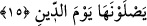
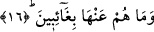
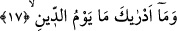

15. Ceza günü oraya girerler.
Yalan saydıkları “cezâ günü oraya girerler.” Bu son cümle, daha önce geçen
“cahîm/Cehennem”
kelimesinin
sıfatıdır.
Veya
Cehennemin
korkunçluğundan
kaynaklanan bir soruya dayalı başlangıç cümlesidir. Bu son ihtimale göre sanki şöyle
bir soru sorulmuş oluyor: “Onların Cehennemdeki durumları nasıldır?” Bu soruya cevap
olarak da; “onlar Cehennemin harâretini hissedip yaşarlar” denmiş oluyor. Nitekim
Halil’in ifâdesine göre; kâfirin Cehenneme girmesi demek, onun harâretini yaşaması ve
bedeniyle bu işe başlaması demektir. Burada dikkat edildiğinde görüleceği üzere naim
kelimesi, kendine uygun bir sıfatla nitelenmemiş, sâdece “iyilerin naîm’de olacakları”
ifâde edilerek bununla yetinilmiştir. Zira ifâdenin ondan önceki kısmı, günahkar
yalanlayıcılarla ilgilidir. Çünkü makam korku verme makamıdır. İyilere müjde
verilmesi ve bunun zikredilmesi ise bu müjde ile kötülerin hâlinin ortaya çıkarılması
amacıyladır. Çünkü bilindiği üzere her şey kendi zıddıyla bilinir.
16. Oradan bir daha ayrılmazlar.
“Oradan” Cehennemden “bir daha” bir an olsun “ayrılmazlar.” Nitekim bu ifâdenin
bir benzeri başka bir âyette şu şekilde geçiyor: “Ateşten çıkmak isterler fakat onlar
oradan çıkacak değillerdir.” (Maide, 5/37) Şu halde buradaki ifâdenin
sevkedilmesinden asıl maksad, onların Cehennemden hiç ayrılmayacak olmalarının
sürekliliğini ortadan kaldırmak değil tam tersine hiç ayrılmayacaklarını ve bunun
sürekli olacağını vurgulamaktır. Bazı âlimlere göre ifâdenin anlamı şöyledir: Onlar
Cehenneme girmeden önce bile Cehennemden uzak değillerdi, kabirlerinde Cehennemin
harâretini duyuyorlardı. Nitekim Peygamberimiz (s.a.); “Kabir ya Cennet
bahçelerinden bir bahçe ya da Cehennem çukurlarından bir çukurdur” [44]
buyurmuştur.
17. Ceza gününü sana bildiren nedir?
Bu âyetteki hitab, aklı eren ve kavrama gücü olan herkese yöneliktir. Aslında “mâ”
soru edatı ile herhangi bir şeyin hakikati ve bir ismin açıklanması istenilir; ama burada